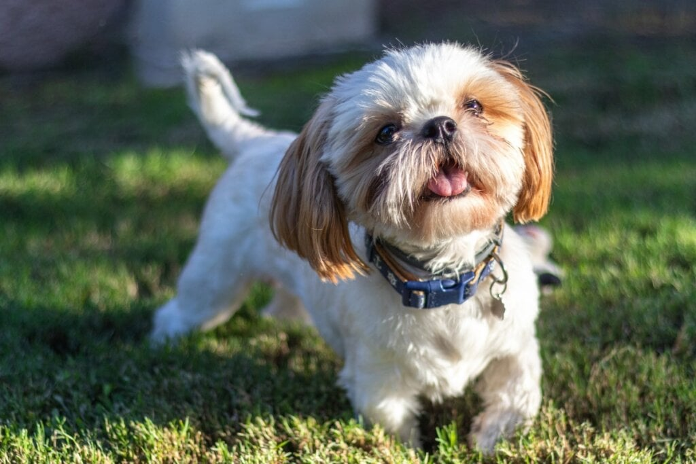
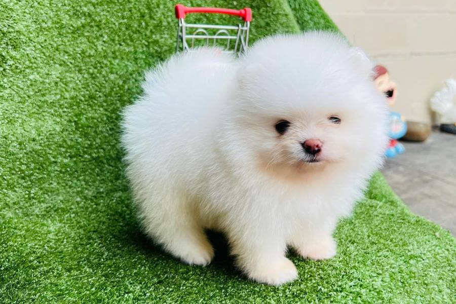
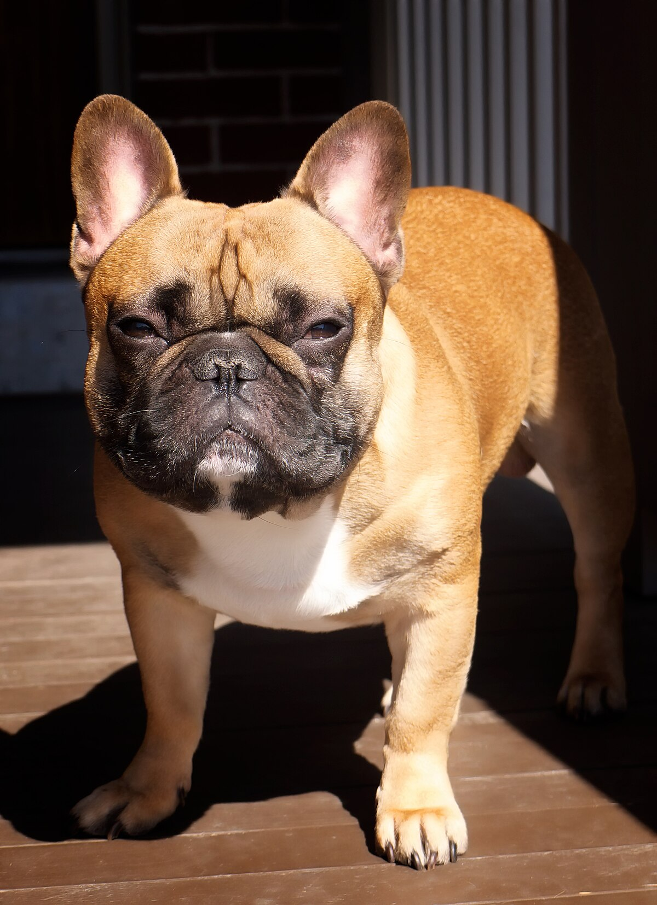
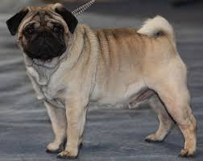
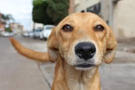
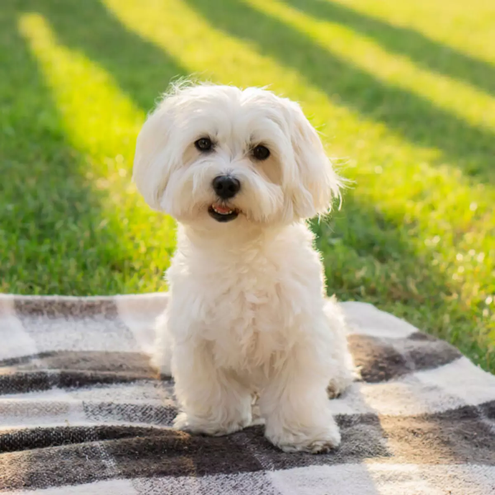

Shih Tzu:
Um pequeno e carinhoso cão de companhia, com pelagem longa e sedosa, ideal para apartamentos.
Lulu da Pomerânia:
Uma raça pequena e vibrante, com pelagem exuberante e personalidade alegre, também ideal para apartamentos.
Bulldog Francês:
Um cão compacto e musculoso, com um rosto único e um temperamento dócil, que se adapta bem a ambientes pequenos.
Yorkshire Terrier:
Uma raça pequena, mas corajosa, com pelagem longa e sedosa, que se adapta bem à vida em apartamento.
Poodle:
Uma raça inteligente e versátil, com pelagem encaracolada e diversas opções de tamanho, que se adapta a diferentes estilos de vida.
6. Golden Retriever:
Um cão grande e dócil, conhecido por sua inteligência e lealdade, ideal para famílias com crianças e espaços amplos.
7. Pug:
Um cão compacto e carinhoso, com um rosto único e um temperamento alegre, que se adapta bem a espaços pequenos
. 8. Pastor Alemão:
Um cão grande e forte, conhecido por sua inteligência e lealdade, que se adapta bem a ambientes com espaço para atividades físicas.
9. Vira-lata (SRD):
Um cão de raça indefinida, mas com características únicas, que pode apresentar uma grande variedade de temperamentos e necessidades.
10. Maltês:
Uma raça pequena e carinhosa, com pelagem longa e branca, que se adapta bem à vida em apartamento.
>